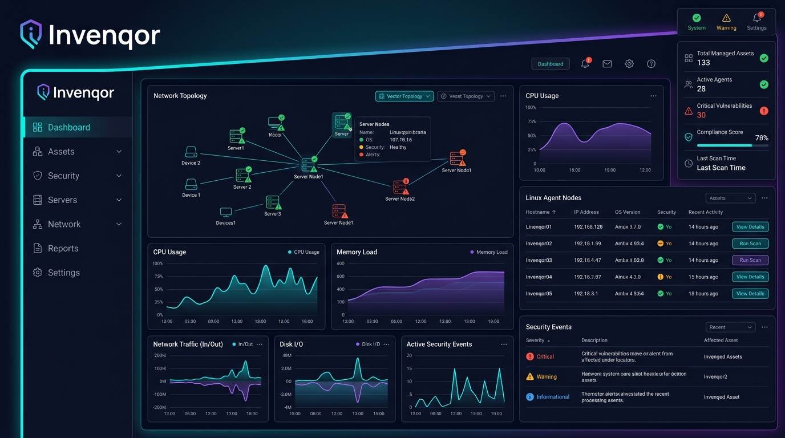

Linux IT 자산 자동화 & 보안 가시성의 새로운 기준
Zero-Touch 에이전트 자동 등록, Musl 초경량 Rust 컬렉터, Go/PostgreSQL 중앙 서버 및 AI MCP(Model Context Protocol) 통합을 지원하는 차세대 엔터프라이즈 자산 관리 플랫폼입니다.

Next-Generation Enterprise Asset Management
운영 부하를 최소화하면서 완벽한 자산 가시성과 보안 제어를 제공합니다.
Zero-Touch Registration
복잡한 사전 토큰 설정이나 외부 언어 런타임 없이, Server URL만으로 장비별 토큰을 자동 발급하고 첫 접속 즉시 자산화합니다.
- Automated token issuance via agent UUID
- Progressive degradation fault-isolation
- Non-intrusive /proc and /sys collection
Ultra-Lightweight Rust Agent
Python, Node.js 등 지저분한 의존성이 필요 없는 single Musl 정적 바이너리로 x86_64 및 aarch64 시스템을 완벽 지원합니다.
- x86_64 & aarch64 Musl static builds
- Resilient local JSONL queue spooling
- Snapshot hash-based delta synchronization
AI MCP (Model Context Protocol)
Claude, AGY 등 AI Agent가 자산 정규화 정보, 토폴로지, 보안 상태를 실시간 자연어로 질의하고 자동 조치할 수 있는 Streamable HTTP MCP를 제공합니다.
- Streamable HTTP MCP Endpoint
- Scoped API Key life-cycle control
- OpenAPI v3 standard compliant
Enterprise Security & SSO
Ed25519 바이너리 서명, Keycloak OIDC 통합, mTLS / Bearer 토큰 인증 및 RBAC(역할 기반 접근 제어)로 무장되어 있습니다.
- Keycloak OIDC SSO integration
- Ed25519 signed rolling OTA updates
- Comprehensive audit logging & IP/CIDR control
Flexible Hybrid Server
단일 바이너리 로컬 SQLite 기동부터 PostgreSQL Primary + Kubernetes 멀티 파드 로드밸런싱 확장까지 지원합니다.
- PostgreSQL Advisory Migration Lock
- Unified TCP port 7070 service
- Official Kubernetes Helm Charts
Asset Normalization & DSL
OS, CPU, 메모리, 네트워크, 프로세스, DEB/RPM 패키지, systemd 서비스, 계정, 컨테이너 자산의 이력 및 관계를 체계적으로 추적합니다.
- Automatic asset merge & separation engine
- Asset filtering Query DSL
- 7-day trend & health operation metrics
Secure & Streamlined Data Pipeline
Invenqor는 아웃바운드 전용 단일 포트 통신 구조로 기업의 네트워크 보안 가이드라인을 철저히 준수합니다.
Rust Agent Non-Intrusive Collection
Reads /proc, /sys directly with zero overhead to build system snapshot
Outbound HTTPS (TCP 7070)
Secure single port encrypted sync with idempotent event queueing
Go Central Server & DB
Asset normalization engine, diff history storage, Keycloak OIDC SSO
React Console & AI MCP Interface
Web management dashboard and Streamable HTTP MCP for AI agents
Launch Server in 1 Minute with Docker
단 한 줄의 명령어만으로 Invenqor 중앙 서버와 DB, 관리 콘솔을 즉시 기동할 수 있습니다.
Role-Based Official Documentation
사용자, 시스템 관리자, 플랫폼 운영자 및 임원을 위한 상세 가이드를 제공합니다.
User Guide
설치 후 기본 사용, 자산 조회, 에이전트 상태 확인 및 일상 문제 해결 안내
Admin Guide
전체 수집 필드, 대규모 배포, 보안 통제, 모니터링, Keycloak OIDC 연동
Server Installation Guide
PostgreSQL / SQLite, 오프라인 폐쇄망 배포, Helm Ingress K8s 멀티 파드 구성
Executive Report
도입 가치, 통제 경계, 위험 분석, 단계별 확산안 및 의사결정 요약
API & MCP Guide
RESTful 자산 API 연동, Scoped API Key 발급, Streamable HTTP MCP AI 연동
v0.2.15 Release Notes
Invenqor v0.2.15 최신 변경사항, 보안 개선 및 빌드 검증 증적
Frequently Asked Questions
Invenqor 도입 및 운용에 관한 핵심 질문에 명확하게 답변해 드립니다.